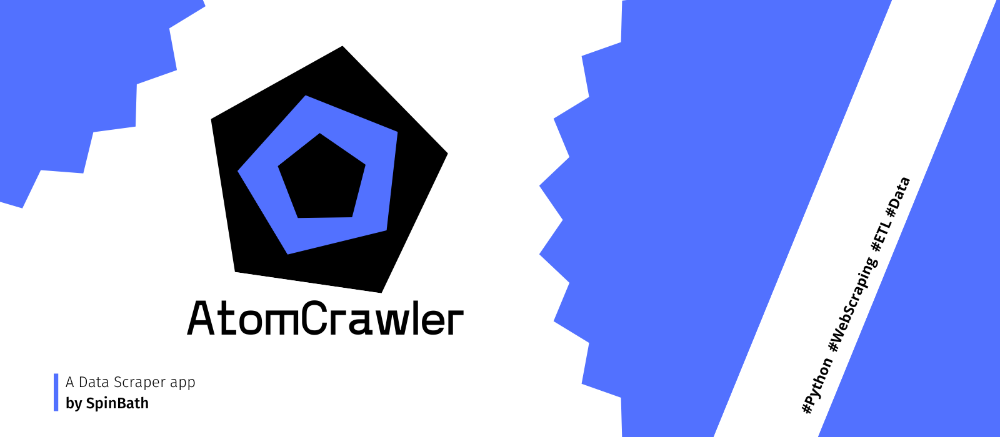
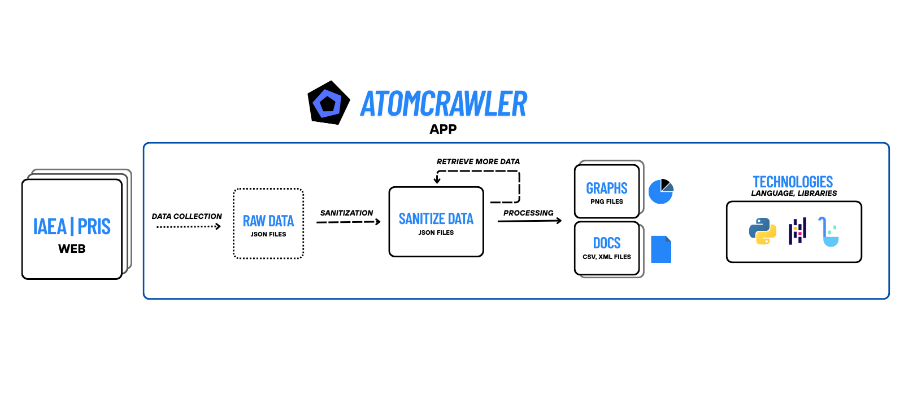

LIGHT
DARK
ATOMCRAWLER
Portfolio


INFORMATION
AtomCrawler es una herramienta ETL desarrollada en Python que realiza web scraping en la web oficial de la PRIS Power Reactor Information System para recopilar datos acerca de todos los reactores nucleares alrededor del mundo.Extrae, procesa y carga los datos recolectados, con los que genera graficos como por ejemplo (Paises con mayor numero de reactores nucleares | Capacidad bruta 'MWe', etc... ) ademas de exportar los datos ya procesados a diferentes formatos de archivos como CSV o XML.
TECHNOLOGIES
- Python
- Pandas
- Matplotlib
- BeautifulSoup